Lab 03: Mini Problems
Learning Objectives
Students should
- be able to create generic data structure.
- be able to use generic data structure.
Initializing
To get the files, run the following command from your PE node.
We recommend creating a new directory called mini to store all your lab mini problems.
1 | |
The files will only be available on Wednesday, 11 September 2024.
Lab 02 Extension
This problem is an extension to mini problems of Lab 02. The solution to the mini problems of Lab 2 can be found in the accompanying directory.
In Ex 2, you will need to copy your solution instead of having the accompanying solution.
Mini Problem 1
Class Diagram

Note: We add a generic interface called Filterable<T>. This interface has a single abstract method boolean isOK(T). This works as a predicate that we will use in our Stack.
Task 1: Creating Generic Stack
Currently, we have been using array of companies (i.e., Company[]) to store the list of companies in our program. Now that we have learnt about generics, let's try to create our own generic data structure. For this problem, we are going to implement a generic stack.
A stack is a last in, first out (LIFO) data structure. In other words, the last element you put in will be the first one taken out. Similar to how if we look at a stack of paper, the top-most paper is the first element taken out. Additionally, we can only place a new paper on the top-most.
Update Stack in the file Stack.java to be generic. Study the implementation to satisfy the requirement below.
Stackis a generic stack with one type parameterT.Stacktakes in only a subtype ofFilterableas its type argument.Stackhas a constructor that takes in a single integer corresponding to the maximum size of the stack.Stacksupports the following methods:void push(T elem): Inserts the elementelemof typeTto the top of the stack if the element is OK to be inserted. An element is OK to be inserted if given the top element of the stacktop,elem.isOK(top)returnstrue. If there is no top element, the method simply insertselemto the stack. The method does nothing if the stack is full.T pop(): Removes and returns the top element of the stack. The method returnsnullif the stack is empty.boolean isEmpty(): Returnstrueif the stack is empty. Otherwise, it returnsfalse.boolean isFull(): Returnstrueif the stack is full. Otherwise, it returnsfalse.String toString(): Returns the string representation of the stack with each element enclosed in{ .. } <-- Top.
Study the following sample run of a Stack for more information on how we use the class.
| Sample Run | |
|---|---|
1 2 3 4 5 6 7 8 9 10 11 12 13 14 15 16 17 18 19 20 21 22 23 24 25 26 27 28 29 30 31 32 33 34 35 36 37 38 39 40 41 42 43 44 45 46 47 48 49 50 51 52 53 54 55 56 57 58 59 60 61 62 63 64 65 66 67 68 | |
Task 2: Use Generic Stack
Modify the class Mini3.java to remove any usage of Company[] and replacing it with Stack<Company>. We will read the company one by one and push it into the stack. During this process, some company may be rejected due to the way isOK(T) is implemented and that is OK.
More importantly, in the method run(), we will find that we need a temporary Stack to process all the companies before copying them back to the original Stack. Assuming that the original Stack is a field named companies and the number of companies is in the field named numCompanies, the code structure will look like the following.
1 2 3 4 5 6 7 8 9 10 | |
As a good practice, you should still copy back even after printing. Just in case we want to do more operations, we should not end with no companies.
Note that this process may further filter out more companies. That is fine. In the end, there may be only one company in the output.
| Mini3.3.in | |
|---|---|
1 2 3 4 5 | |
| Mini3.3.out | |
|---|---|
1 | |
Testing
You can test your implementation of Stack independently by executing TestStack.java.
1 2 | |
If everything is correct, you should see the following.
| TestStack | |
|---|---|
1 2 3 4 5 6 7 8 9 10 11 12 13 14 15 16 | |
Mini Problem 2
Class Diagram

Note: We add a generic interface called SalaryMan<T>. This interface has a single abstract method T higher(T other). The method returns either this or other depending on the instance with the higher salary
Task 1: Creating Generic Queue
Bob prefers the use of Queue instead of a Stack as it is fairer because it is a first in, first out (FIFO) data structure. In other words, the first element you put in will be the first one taken out. Similar to how from a queue at the canteen, you enter from the back of the queue. Then, when you reached the front, you may exit the queue.
Update Queue in the file Queue.java to be generic. Study the implementation to satisfy the requirement below.
Queueis a generic queue with one type parameterT.Queuetakes in only a subtype ofSalaryManas its type argument.Queuehas a constructor that takes in a single integer corresponding to the maximum size of the queue.Queuesupports the following methods:void enqueue(T elem): Inserts the elementelemof typeTto back of the queue. The method does nothing if the stack is full.boolean isEmpty(): Returnstrueif the stack is empty. Otherwise, it returnsfalse.boolean isFull(): Returnstrueif the stack is full. Otherwise, it returnsfalse.String toString(): Returns the string representation of the stack with each element enclosed in{ .. } <-- Back.
Task 2: Extending a Queue
Now implement the method T findBoss() that returns the highest element. The element elem is the highest if for every other element other, elem.higher(other) or other.higher(elem) returns elem.
Study the following sample run of a Queue for more information on how we use the class.
| Sample Run | |
|---|---|
1 2 3 4 5 6 7 8 9 10 11 12 13 14 15 16 17 18 19 20 21 22 23 24 25 26 27 28 29 30 31 32 33 34 35 36 37 38 39 40 41 42 43 44 45 46 47 48 49 50 51 52 53 54 55 56 57 | |
Testing
You can test your implementation of Queue independently by executing TestQueue.java.
1 2 | |
If everything is correct, you should see the following.
| TestQueue | |
|---|---|
1 2 3 4 5 6 7 8 9 10 | |